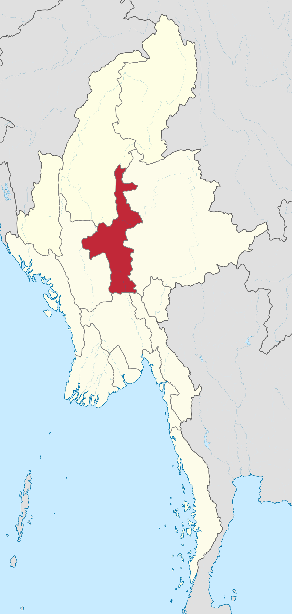
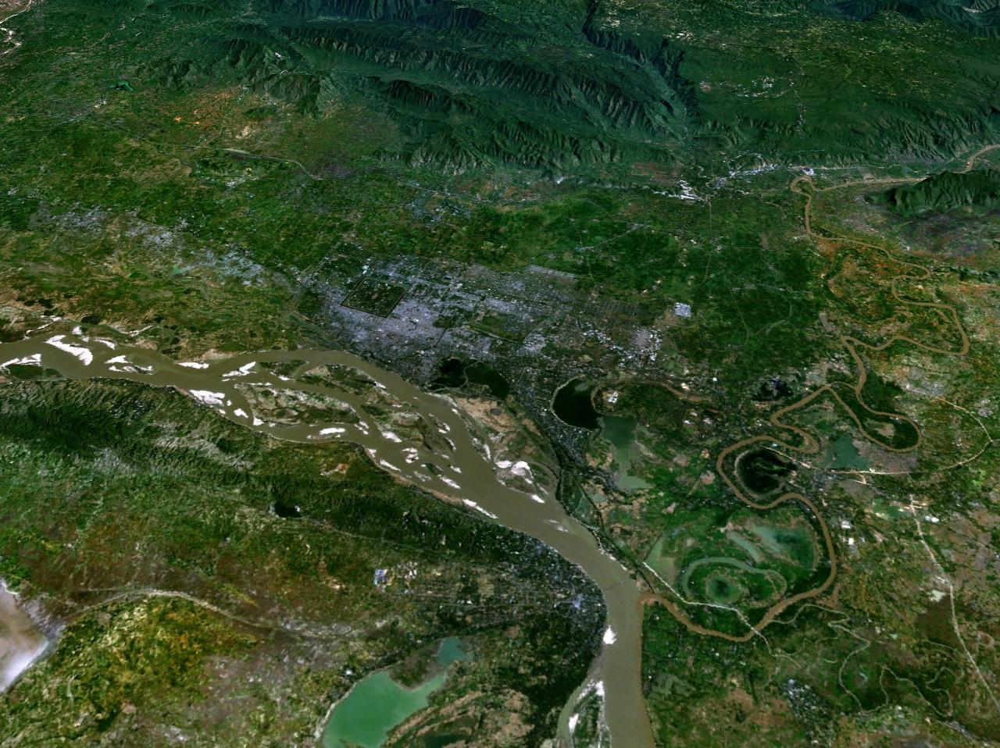
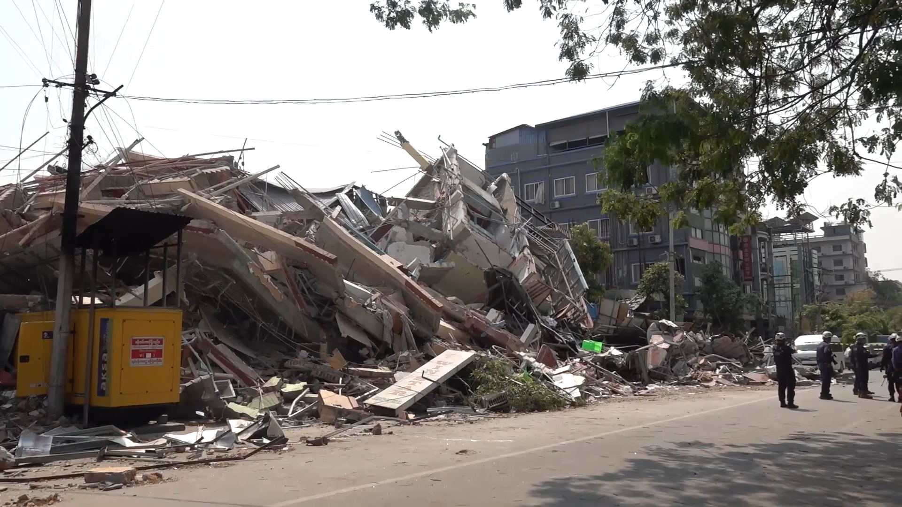

If You want to know about my projects Click The Button . You can also view my github account.


မန္တလေးမြို့တော်သည် မြန်မာနိုင်ငံ၏ ဒုတိယအကြီးဆုံးမြို့ဖြစ်ပြီး မန္တလေးတိုင်းဒေသကြီး၏မြို့တော်ဖြစ်သည်။ မြန်မာယဉ်ကျေးမှု အချက်အချာဌာန တစ်ခုလည်းဖြစ်သည်။ ၂၀၁၄ ခုနှစ် စာရင်းအရ လူဦးရေ ၁ ၂၂၅ ၅၅၃ ယောက် ရှိသည်။ စီးပွားရေးမြို့တော် ရန်ကုန်မြို့ မှ ၃၈၅မိုင် ကွာဝေး၍ ဧရာဝတီမြစ်၏ အရှေ့ဘက်တွင် တည်ရှိသည်။ ကုန်းဘောင်မင်းဆက် မြန်မာနိုင်ငံ၏ နောက်ဆုံးမင်းနေပြည်တော် ဖြစ်ခဲ့သည်။ ယခုအခါ မြန်မာနိုင်ငံအထက်ပိုင်း မန္တလေးတိုင်းဒေသကြီး၊ မန္တလေးခရိုင်တို့၏ ရုံးစိုက်မြို့ဖြစ်သည်။ ရန်ကုန်မြို့ပြီးနောက် ဒုတိယအကြီးဆုံးသောမြို့ဖြစ်သည်။ မန္တလေးမြို့သည် ခေတ် ၃ ခေတ်ပြောင်းခဲ့သော်လည်း ထင်ရှားလျက်ပင် ရှိပေသေးသည်။ နှစ် ၁ဝဝ အတောအတွင်းဝယ် မန္တလေးမြို့တွင် ဒုတိယကမ္ဘာစစ်ဒဏ်၊ မီးဘေးအန္တရာယ်များကို ခံရသောကြောင့် အပျက်အစီးရှိခဲ့သော်လည်း အသစ် ပြန်လည်ပျိုးထောင်နိုင်ခဲ့သည်။မန္တလေးမြို့တော်သည် မြန်မာနိုင်ငံ၏ နောက်ဆုံးမင်းနေပြည်တော် ဖြစ်ခဲ့သည့်အလျောက် မြန်မာဟန်စစ်စ်ယဉ်ကျေးမှု အမွေအနှစ်များ အများအပြား ကျန်ရစ်ခါ မြို့တော်သားများက ဆက်လက်ထိန်းသိန်းလျှက်ပင် ရှိနေကြသေးသည်။
၁၈၈၅ ခုနှစ် တတိယ အင်္ဂလိပ် - မြန်မာ စစ်ပွဲအပြီး မြန်မာနိုင်ငံ လွတ်လပ်ရေး ဆုံးရှုံး၍ အင်္ဂလိပ် တို့၏ လက်အောက်သို့ကျရောက်ခဲ့ကြသည်။ မီးရထားပို့ဆောင်ဆက်သွယ်ရေးစနစ်ကို ၁၈၈၉ ခုနှစ်တွင် တည်ဆောက်ပေးခဲ့သည်။ ၁၉၂၅ ခုနှစ်တွင် မန္တလေးကောလိပ် ကို တည်ဆောက်ဖွင့်လှစ်ပေးခဲ့သည်။ကိုလိုနီခေတ်တွင် မန္တလေးမြို့သည် ဗုဒ္ဓယဉ်ကျေးမှုနဲ့ အနုပညာတို့ သင်ကြားရာဗဟိုချက်အဖြစ် တည်ရှိခဲ့သည်။
မန္တလေးမြို့ စတင်တည်ကာစအချိန်တွင် မန္တလေးအရပ်ကို ထီးပေါင်းကားဟု ခေါ်ဆိုနေကြသည်။ မြို့တော်၏ တရားဝင်အမည်မှာ ရတနာပုံဖြစ်သည်။ ဘုရင်ခေတ်က မန္တလေးအား ရွှေမြို့တော်၊ ရတနာပုံရွှေမြို့တော် စသည်ဖြင့် သုံးခဲ့ကြသည်။ မန္တလေးဟု ခေါ်ဆိုခြင်းနှင့် ပက်သက်၍ တိကျသော အထောက်အထားမတွေ့ရပေ။ ပညာရှင်များကမူ အမျိုးမျိုးဆိုခဲ့ကြသည်။အချို့က မန္တလေးတောင်အား အစွဲပြု၍ တောင်ခြေရှိမြို့အား မန္တလေးဟုခေါ်ကြောင်း ဆိုကြသည်။ မန္တလေးဆိုသည့် စကားလုံးမှာ မဏ္ဍလဟူသော စကားမှ ဆင်းသက်လာကာ ညီညာပြန့်ပြူးသောလွင်ပြင်ဟု အဓိပ္ပာယ်ရသည်။ မဏ္ဍလဟူသော စကားသည် ခေတ်ကာလ ကြာလာသောအခါ မဏ္ဍလေး၊ မန္တလေး စသည်ဖြင့် ပြောင်းလာခဲ့သည်ဟု ဆိုကြသည်။
မန္တလေးမြို့သည် ဧရာဝတီမြစ်၏ လက်ဝဲဘက်ဖြစ်သော အရှေ့ဘက် ကမ်းပေါ်တွင် တည်ရှိ၍ ဧရာဝတီမြစ်နှင့် ရှမ်းကုန်းပြင်မြင့်၏ အကြား အနံ ၈ မိုင် ရှိသော မြေပြန့်၏ တစ်စိတ်တစ်ပိုင်းတွင် တည်ရှိသည်။ မြောက်လတ္တီကျု ၂၁ ဒီဂရီ ၉၈ မိနစ် နှင့် အရှေ့လောင်ဂျီကျု ၉၆ ဒီဂရီ ဝ၈ မိနစ် ကြားတွင် တည်ရှိသည်။
မန္တလေးမြို့သည် အကျယ်အဝန်းအားဖြင့် ၂၅ စတုရန်းမိုင် ရှိ၍ လူဦးရေမှာ ၁၉၆၃ ခုနှစ်တွင် ခန့်မှန်းခြေ ၂၁၅၄၂၆ ယောက်ခန့်ရှိသည်။ ရပ်ကွက် ၃၈ ၊ အိမ်ခြေပေါင်း ၃၅ဝဝဝ ခန့် ရှိ၏။ ရန်ကုန်မြို့ကဲ့သို့ပင် လူမျိုးပေါင်းစုံသော မြို့ဖြစ်၏။ ရာသီဥတုမှာ ပူအိုက်ခြောက်သွေ့၍ ဖုံထူသည်။၁၉၆၅ခုနှစ်၊ အောက်တိုဘာ (၁)ရက်နေ့တွင် မန္တလေးမြို့ကို (၄)မြို့နယ်အဖြစ် သတ်မှတ်ခဲ့ပြီး နိုင်ငံတော်ငြိမ်ဝပ်ပိပြားမှုတည်ဆောက်ရေးအဖွဲ့ လက်ထက် ၁၉၉၂ခုနှစ်၊ ဒီဇင်ဘာလ ၁၂ရက်နေ့တွင် ပြည်ထဲရေးဝန်ကြီးဌာန၏ ကြေညာစာအမှတ်(၈၄)အရ မန္တလေးမြို့ကို (၄)မြို့နယ်မှ (၅)မြို့နယ်အဖြစ် သတ်မှတ်ခဲ့သည်။
၂၀၀၇ ခုနှစ်တွင် မန္တလေးမြို့၏ လူဦးရေသည် စုစုပေါင်း ၁ သန်းခန့် ရှိသည်ဟု သိရသည်။ လူဦးရေ တိုးတက်နှုန်းများအရ ၂၀၂၅ ခုနှစ်တွင် မြို့နေလူဦးရေ စုစုပေါင်း ၁.၅ သန်းခန့်ရှိလာမည်ဟု ခန့်မှန်းထားသည်။ မြန်မာနိုင်ငံ၏ ယဉ်ကျေးမှု မြို့တော်ဖြစ်သော မန္တလေးမြို့သည် လွန်ခဲ့သော နှစ်ပေါင်း ၂၀ ခန့်က တရုတ်လူမျိုးများ ဝင်ရောက်လာခဲ့ပြီး တရုတ်ယဉ်ကျေးမှုများ စီးဆင်းဝင်ရောက်လာသည်။ ယခုအခါ တရုတ်လူမျိုးများမှာ မြို့နေလူထု၏ ၃၀ ရာခိုင်နှုန်းမှ ၄၀ ရာခိုင်နှုန်းအထိ ရှိနေပြီ ဖြစ်သည်။ အိန္ဒိယလူမျိုးများသည်လည်း မန္တလေးမြို့တွင် နေထိုင်ကြသည်။
ဗမာဘာသာစကားမှာ အဓိက ဘာသာစကားဖြစ်သည်။ တရုတ်ပြည်မကြီး စကားကို တရုတ်တန်း နှင့် ဈေးချိုတော် အနီးတဝိုက်တွင် တွင်တွင်ကျယ်ကျယ် အသုံးပြုကြသည်။ အင်္ဂလိပ်ဘာသာစကားမှာ တတိယဘာသာစကား အဖြစ် ပြောဆိုနေကြသည်။
18%
14%
19%
17%
16%
16%
မြန်မာနိုင်ငံ စစ်ကိုင်းမြို့နှင့် မန္တလေးမြို့ အနီး၌ ဗဟိုပြု လှုပ်ခတ်ခဲ့သည့် မိုးမင့် စကေး Mw ၇.၇–၇.၉ ရှိ ငလျင်ဖြစ်သည်။ ထိုငလျှင်ကို စစ်ကိုင်းငလျှင်ကြီးဟုလည်းခေါ်ကြသည်။ အလျားလိုက်ပြတ်ရွေ့အမျိုးအစား ငလျင်ဖြစ်ပြီး မွမ်းမံ မာကယ်လီ ပြင်းအား စကေးအရ အမြင့်ဆုံး ပြင်းအားမှာ X (ပြင်းထန်မှုလွန်ကဲ) ရှိသည်ဟု မှတ်တမ်းတင်ထားသည်။[၂] ဤ ငလျင်သည် ပြင်းအား ၇.၉ အဆင့်ရှိ ၁၉၁၂ မေမြို့ငလျင်နောက်ပိုင်း ဖြစ်ပေါ်သော အကြီးဆုံး ငလျင်ဖြစ်သည်။[၃] မြန်မာ့ ခေတ်ပေါ် သမိုင်းတွင် ၁၉၃၀ ပဲခူးငလျင် ပြီးလျှင် သေဆုံးသူ အများဆုံး ငလျင်အဖြစ် မှတ်တမ်းဝင်ခဲ့သည်။[၄] ဤ ငလျင်ကြောင့် မြန်မာနိုင်ငံတွင် ကြီးမားစွာသော ထိခိုက်ဆုံးရှုံးမှုများ ပေါ်ပေါက်ခဲ့ပြီး အိမ်နီးချင်း ထိုင်းနိုင်ငံ၌လည်း ပျက်စီးဆုံးရှုံးမှုများ ဖြစ်ပေါ်စေခဲ့သည်။
USGS ၏ PAGER ဝန်ဆောင်မှု က မန္တလေး၊ ပဲခူး၊ နေပြည်တော်နှင့် စစ်ကိုင်းတိုင်းဒေသကြီးများရှိ အနည်းဆုံး လူပေါင်း ၄၁၅,၀၀၀ ဦး သည် MMI X အဆင့် လှုပ်ခါမှုနှင့် ကြုံတွေ့ခဲ့ရသည်ဟု ခန့်မှန်းခဲ့သည်။ ထို့အပြင် MMI IX (ကြမ်းတမ်း) နှင့် ကိုက်ညီသော လှုပ်ခါမှုကို ဒေသလေးခုရှိ ခန့်မှန်းခြေ လူပေါင်း ၅.၈ သန်း ခံစားခဲ့ရသည်။
မန္တလေးမြို့တွင် လှုပ်ခတ်ခဲ့သော ငလျင်ကြောင့် အချို့သော အဆောက်အအုံများ ပျက်စီးခဲ့ပြီး လမ်းပန်းဆက်သွယ်ရေးနှင့် လျှပ်စစ်၊ ရေပေးဝေရေးစနစ်များ ထိခိုက်ခဲ့ပါသည်။ အဆိုပါ ငလျင်ကြောင့် ပြည်သူအချို့ ထိခိုက်ဒဏ်ရာရရှိခဲ့ပြီး နေထိုင်မှုဘဝများတွင် အခက်အခဲများ ဖြစ်ပေါ်ခဲ့ပါသည်။လက်ရှိအချိန်တွင် သက်ဆိုင်ရာ အဖွဲ့အစည်းများမှ အရေးပေါ် ကယ်ဆယ်ရေးလုပ်ငန်းများ ဆောင်ရွက်လျက်ရှိပြီး ဒဏ်သင့်ဒေသများ၌ ပြန်လည်ထူထောင်ရေး လုပ်ငန်းများကို ဆက်လက် ဆောင်ရွက်လျက်ရှိကြောင်း သိရှိရပါသည်။
